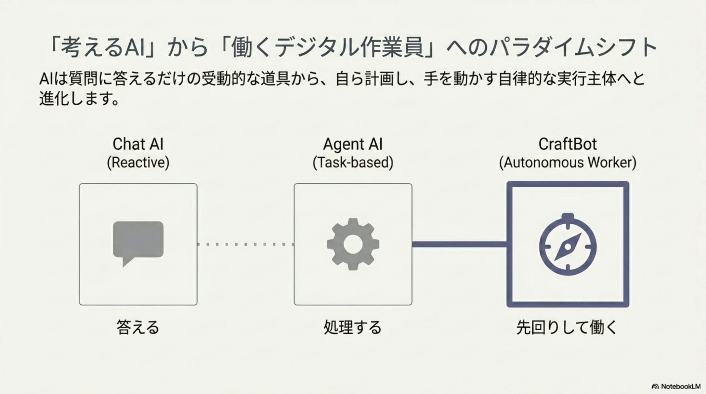
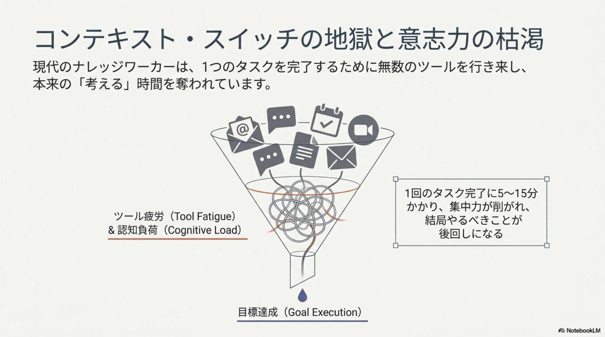
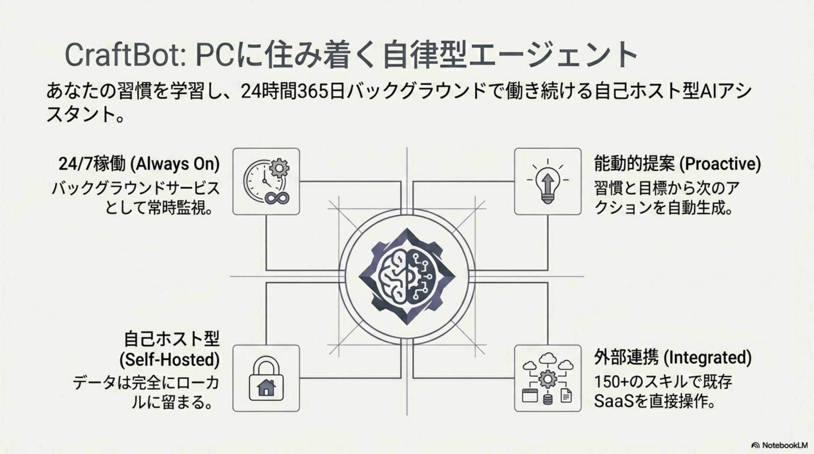
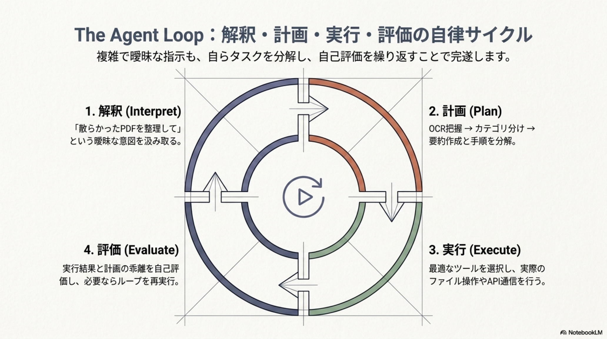
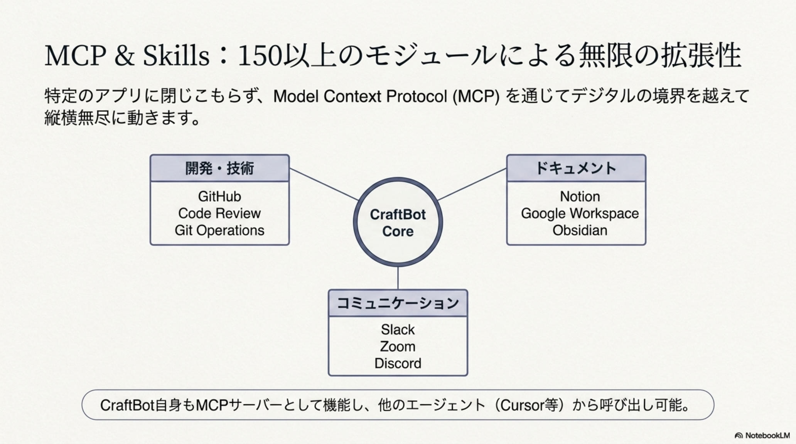
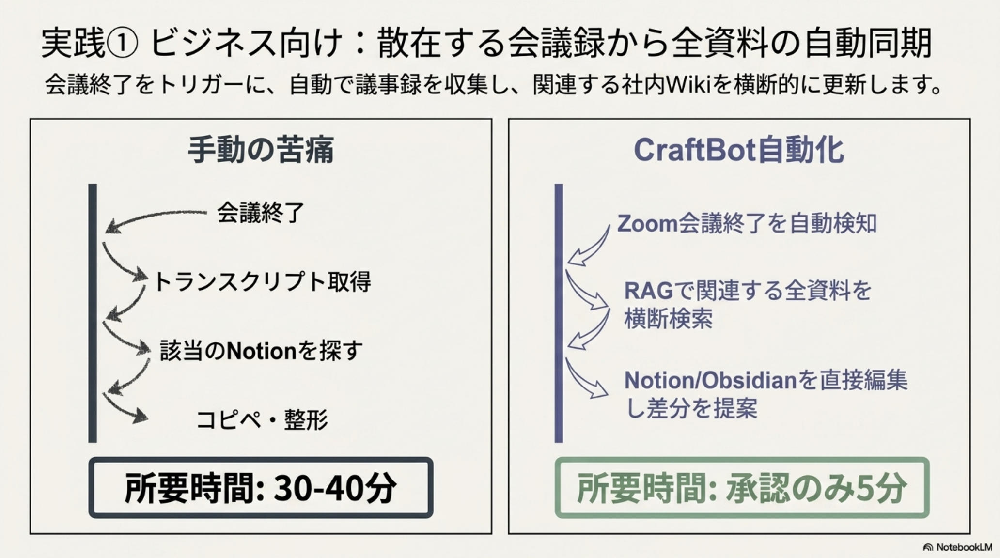
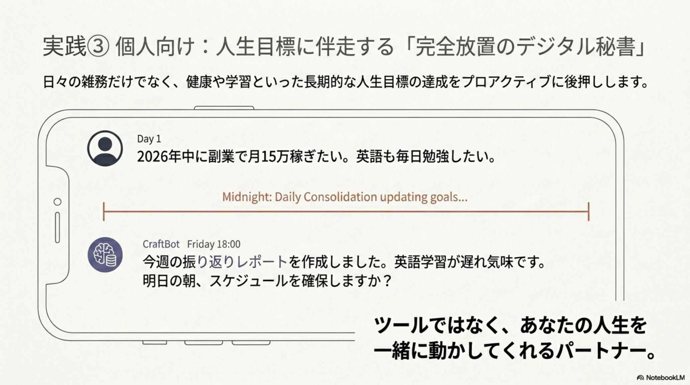
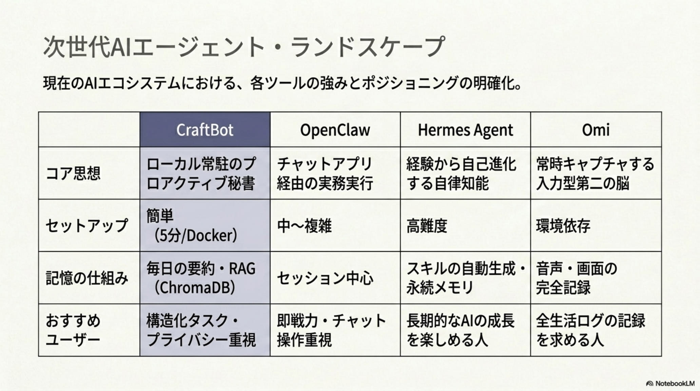
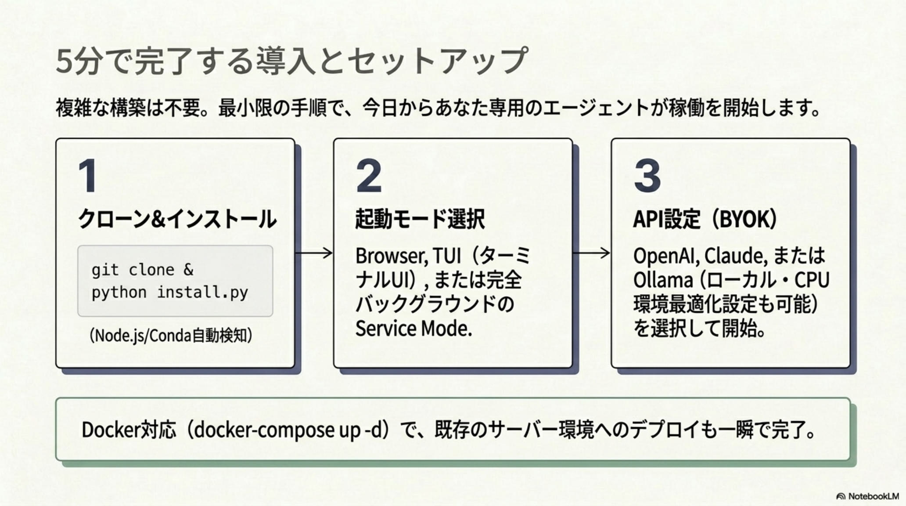

CraftBot
指示待ちから「自ら働く」AIへ
— PCに住みこむ、24時間365日働くデジタル秘書。
ローカル環境で24/7稼働する自己ホスト型AI秘書。Ollama／Llama 3.3／Qwen 2.5 で動き、150+のスキルと MCP で既存SaaSを直接操作。深夜に記憶を蒸留し（Daily Consolidation）、朝に先回り提案を届ける。作業者から人生のオーケストレーターへ——2026年、「自分専用の有能な見習い秘書」を PC に常駐させる時代の幕開け。

「考えるAI」から「働くデジタル作業員」へ
AIは質問に答えるだけの受動的な道具から、自ら計画し、手を動かす自律的な実行主体へ進化する。Chat AI（Reactive）、Agent AI（Task-based）を経て、CraftBot は先回りして動く「Autonomous Worker」。

従来のAI
- 指示を待つだけの「回答者」
- チャット単位で文脈がリセット
- 「今日ジム行こう」と背中を押さない
- クラウド常駐でデータ流出リスク
- API従量課金でコストが読めない
CraftBot
- 目標を理解し先回りで行動する実働者
- ChromaDBで長期記憶を永続化
- 朝に「18時に資料作成を入れますか？」
- 完全ローカル · データ外部流出ゼロ
- BYOK × Ollama で追加コスト $0
「見えない疲労」の正体——コンテキスト・スイッチ地獄
Gmail、Slack、Notion、Zoom……1日に何十回もアプリを行き来するコンテキストスイッチが集中力を奪い、「ツール疲労」と「意志力の枯渇」を招く。1タスク完了に5〜15分のスイッチコストが、やるべきことを後回しにする。

CraftBotを支える4本柱
PCに住み着く自律型エージェント。あなたの習慣を学習し、24時間365日バックグラウンドで働き続ける。

Always On
バックグラウンドサービスとして常時監視。PCを開いていなくても学習と計画を継続。
Proactive
習慣と目標のギャップを分析し、次のアクションを自動生成。朝イチで今日の予定を提示。
Self-Hosted
データは完全にローカルに留まる。Ollama / Llama 3.3 / Qwen 2.5 で推論、API流出ゼロ。
Integrated
150+スキル × MCP で Gmail / Notion / Obsidian / Slack / Calendar / GitHub を直接操作。
解釈 · 計画 · 実行 · 評価の自律サイクル
複雑で曖昧な指示も、自らタスクを分解し、自己評価を繰り返すことで完遂する。Interpret → Plan → Execute → Evaluate の4フェーズを閉ループで回し続ける、CraftBotの心臓部。

Approval Gate — 「勝手に」動かないという約束
CraftBotが提案した全アクションは、ユーザーの承認を経て初めて実行される。メール送信・カレンダー登録・ファイル編集といった副作用のある操作は必ず確認ステップを挟み、暴走と誤操作を構造的に防止。人間は「指揮」に集中し、実作業はAIに委ねる役割分担を実現する。
150+モジュールによる無限の拡張性
特定のアプリに閉じこもらず、Model Context Protocol (MCP) を通じてデジタルの境界を越えて縦横無尽に動く。CraftBot自身もMCPサーバーとして機能し、他のエージェント（Cursor等）から呼び出し可能。

深夜から始まる「知識の蒸留」の1日
あなたが眠る深夜、CraftBotは今日の会話・タスク・ツール履歴を振り返り、長期記憶に定着させる。翌朝、先回りした提案が届く——その繰り返しが「人生の質」を変えていく。
Daily Consolidation — 記憶の蒸留
今日の会話・完了タスク・ツール履歴を振り返り、ChromaDB に「知識」として定着。「朝型」「運動目標が未達」といったパターンを長期記憶に刻む。
プロアクティブ朝ブリーフィング
PCを開くと通知：「副業の進捗が止まっています。18時に空きがあるのでドラフト作成を入れますか？」——目標と現状のギャップから先回り提案を生成。
MCPオーケストレーション
Teams会議終了と同時に文字起こしを自動回収し、ObsidianとNotionを横断検索。関連資料を自動更新し、「Q3ロードマップ資料を更新しました」と Slack へ報告。
デイリーノートの自動編纂
その日の全タスクをまとめ、Obsidianのデイリーノートに追加記入。次回セッションへの文脈を準備し、翌朝へ滑らかに繋ぐ。
実践シーン——30分が「承認のみ5分」に
会議議事、エンジニアリング、デイリーノート、そして人生目標の伴走まで。CraftBotは「手動の苦痛」を「承認のみ」の軽さに変える。


次世代AIエージェントランドスケープ
現在のAIエコシステムにおける、各ツールの強みとポジショニングの明確化。CraftBot は「ローカル常駐のプロアクティブ秘書」という独自ポジションを確立している。

| 項目 | CraftBot | OpenClaw | Hermes Agent | Omi |
|---|---|---|---|---|
| コア思想 | ローカル常駐のプロアクティブ秘書 | チャットアプリ経由の実務実行 | 経験から自己進化する自律知能 | 常時キャプチャする入力型第二の脳 |
| セットアップ | 簡単（5分 / Docker） | 中〜複雑 | 高難度 | 環境依存 |
| 記憶の仕組み | 毎日の要約・RAG（ChromaDB） | セッション中心 | スキルの自動生成・永続メモリ | 音声・画面の完全記録 |
| プライバシー | 完全ローカル（BYOK可） | ローカル動作 | ローカル動作 | 端末+限定クラウド |
| 推奨ユーザー | 構造化タスク · プライバシー重視 | 即戦力 · チャット操作重視 | 長期的なAIの成長を楽しめる人 | 全生活ログの記録を求める人 |
5分で始めるローカル運用
CPUのみでも起動可能、依存関係はpython install.pyで自動解決。BYOKでGPT／Claude接続も可能。
Install
GitHubから python install.py を実行。依存関係は自動解決、CPUのみでも起動可能。
Pick your LLM
Ollama 経由で Llama 3.3 / Qwen 2.5。BYOKでGPT / Claude接続も可能。
Wire up skills
Notion / Obsidian / Slack をスキル登録し、Approval Gateを確認して運用開始。
ローカル運用アーキテクチャ
Python Installer / Ollama / ChromaDB / MCP が一枚で繋がる、完全ローカル構成の全体像。

ツールではなく、あなたの人生を一緒に動かしてくれるパートナー。— CraftBot Whitepaper, 2026年4月